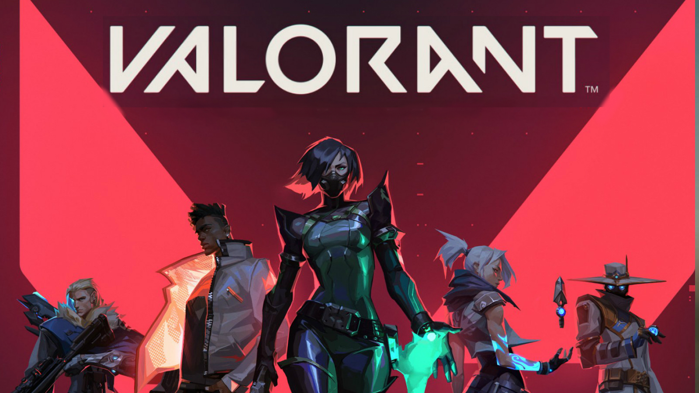
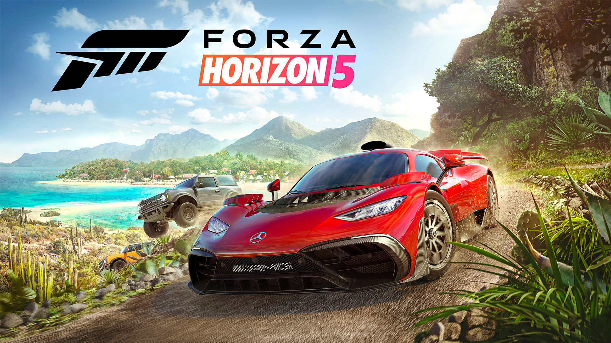

Escape from Tarkovの紹介
Escape from Tarkovは、ロシアのBattlestate Gamesが開発したハードコアなサバイバルFPSゲームで、架空のロシアの都市タルコフを舞台に、リアルな戦闘とサバイバルを体験できます。プレイヤーはマップ上でリソースを収集し、敵対するプレイヤーやAIと戦いながら脱出を目指します。ゲームは詳細な武器カスタマイズ、リアルなダメージモデル、負傷管理、経済システムを特徴とし、プレイヤーは経験値を積んでキャラクターを成長させることができます。また、フリーマーケットでのアイテム取引や、プレイヤーがScavとして参加するモードもあります。緊張感と達成感が魅力のこのゲームは、戦術的思考とサバイバルスキルを試されるチャレンジングな体験を提供します。
デメリット
価格が高いVALORANTの紹介
VALORANTは、Riot Gamesが開発した無料のマルチプレイヤーFPSゲームで、5対5のチーム戦でエージェントと呼ばれるキャラクターの特殊能力を駆使し、攻撃側がスパイクを特定の地点に設置して爆発させるか、防御側がそれを阻止する戦略的なゲームプレイが特徴です。各エージェントはデュエリスト、イニシエーター、コントローラー、センチネルといった役割を持ち、それぞれ異なるアビリティを使用してチームの勝利に貢献します。また、13ラウンド先取で勝利が決まるラウンド制の形式で、プレイヤーはエイム力や戦略、購入資金を駆使しながら試合を進めていきます。定期的なアップデートにより、新しいエージェントやマップが追加されることで常に新鮮な体験が提供されるほか、スキルベースのマッチメイキングにより適切な対戦相手とマッチするため、初心者から上級者まで幅広く楽しめるゲームです。
Forza Horizon 5の紹介
Forza Horizon 5は、Playground Gamesが開発し、Microsoftが発売するオープンワールドのレーシングゲームで、美しいメキシコの風景を舞台に、500種類以上の車両をカスタマイズしながら、多様なレースやチャレンジに参加できます。プレイヤーは、リアルな天候変化や季節の移り変わりを体験しつつ、オンラインモードで世界中のプレイヤーと競い合ったり協力したりできます。さらに、「EventLab」機能を使って自分だけのレースやチャレンジを作成し、他のプレイヤーと共有することも可能です。
APEX Legendsの紹介
Apex Legendsは、Respawn Entertainmentが開発し、Electronic Artsが配信する無料のバトルロイヤルヒーローシューティングゲームです。最大60人が3人1組のチームで戦い、最後の1チームになるまで戦闘が続きます。プレイヤーは「レジェンド」と呼ばれる固有のアビリティを持つキャラクターを操作し、戦略的なプレイが求められます。多様な武器や装備が存在し、シーズンごとに新しいレジェンド、武器、マップ変更が追加されるため、常に新鮮な体験が提供されます。リスポーン機能やピンシステムなど、チームプレイを強化する要素も多く、戦略的な連携が勝利の鍵です。シーズン制とバトルパスにより、さまざまな報酬やスキンをアンロックすることができます。